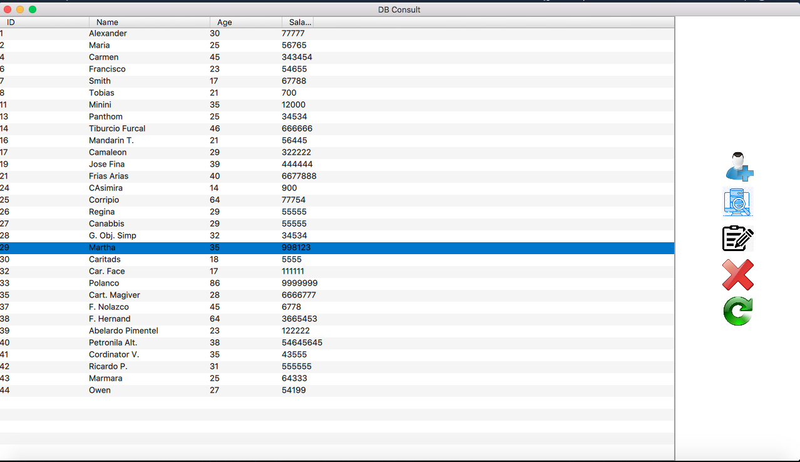
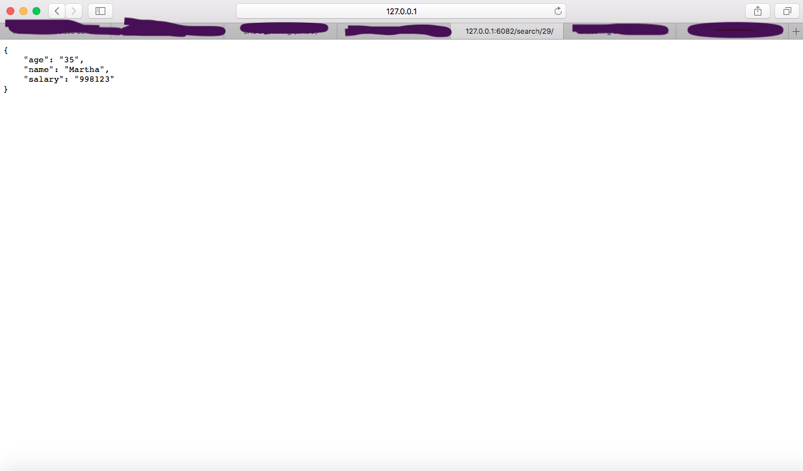
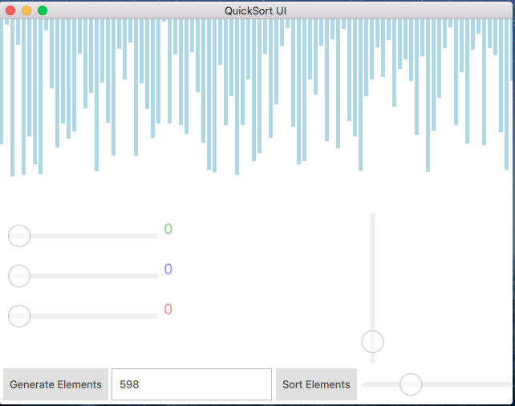
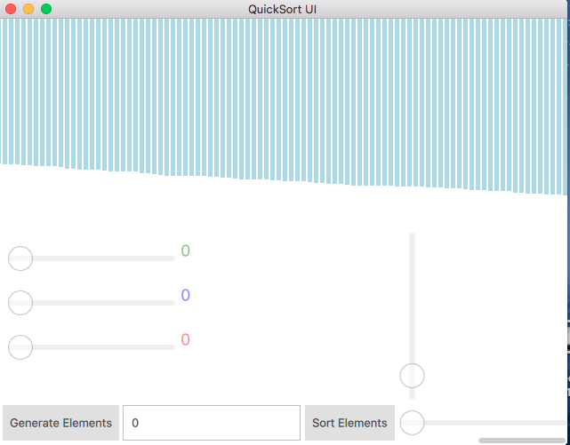
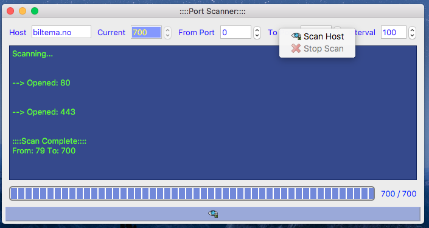
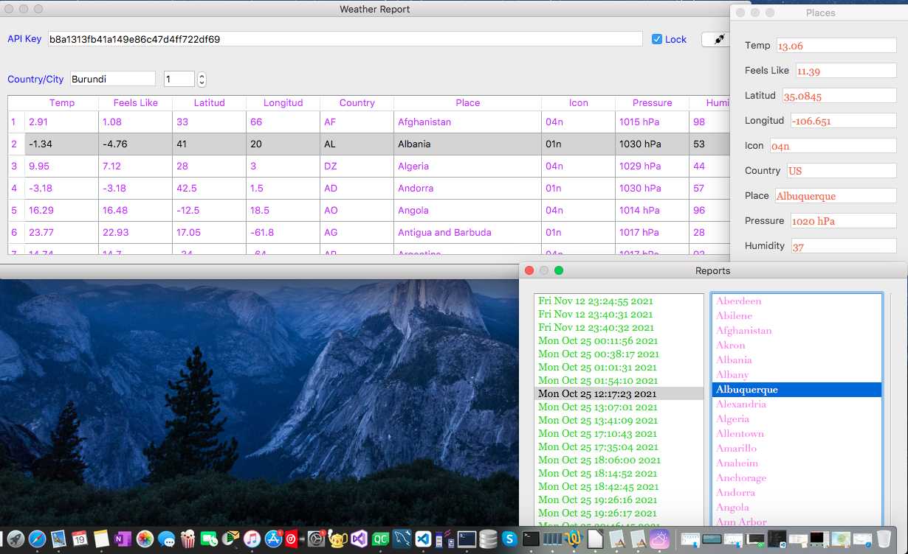

Yes, this is me, Alexander a frontend developer that find a solution to every challenge transforming everything into code.
I'm Alexander Casado a software developer that anjoy to code and solve problems, my jurney started back in 2019 i picked C/C++ to start the jurney, i learn the basics of both, Data Structure and then i went deep into OOP and Desing Pattern, after i learned all that i decided to learn Qt that is a very complete C++ Framework.
Argentina Mateo Lara (2007-2009)
The degree was completed with a high efficiency and performance in matters as chemistry, Computers Science, Spanish gram and History.
Dominican University O&M (2009-2012)
The grade was half completed and corresponded matters like, Physics, Math, Statistics, Office Systems and Programming has been taken and submitted with successfull score.
HTTP Server (2022)
 This is a HTTP Server Wrapper implemented with Qt Framework and C++ 11. Server support basics HTTP functionalities and is scalable it can handle 16,000 connections per client, this is possible because in te bone code base multithreaded is implemented in the server. The requests are handle with low level sockets and can read and write back/forward UTF-8 unicode and serve statics files like .html and .css also has JSON support.
QuickSort (2022)
 QuickSort is a software that sort any elements size from 1 to 2,000 elements even more if modified. It has implemented a quickSort algorithm n*log(n), its not linear, no the best but it's very fast working with a high number of elements. the software is user dynamic, it can be changed by the user: bars colours, number of elements and elements size. programming language used is C++ as backend and QML for frontend. Files attached .png format
Port Scanner (2021)
PortScanner is a Network scanner to scan ports from 1 to port MAX_PORT specified by user, PortScanner use low level sockets to send and receive connection request to B host, works in LAN and is implemented with low level multithreading. QtCore C++11 and Qt Widget for UI.
Weather Information System (2021)
Weather Info is a weather info software that retrieve weather information from 600 + places including countries and popular cities in the world from Network resources using REST API capabilities and is Event Driven oriented using Qt Framework and C++. It has a network remote capability able to connect in a LAN topology with any TCP Client and from any device, it can receives commands from a local device via Wireless or Cable and it reply echo back to the client reporting how may data has been retrieved from remote API. Software can make reports and read from saved reports data from a NoSQL DB.
{kind=link}
{kind=link}
{kind=link}
{kind=link}
{kind=link}
{kind=link}